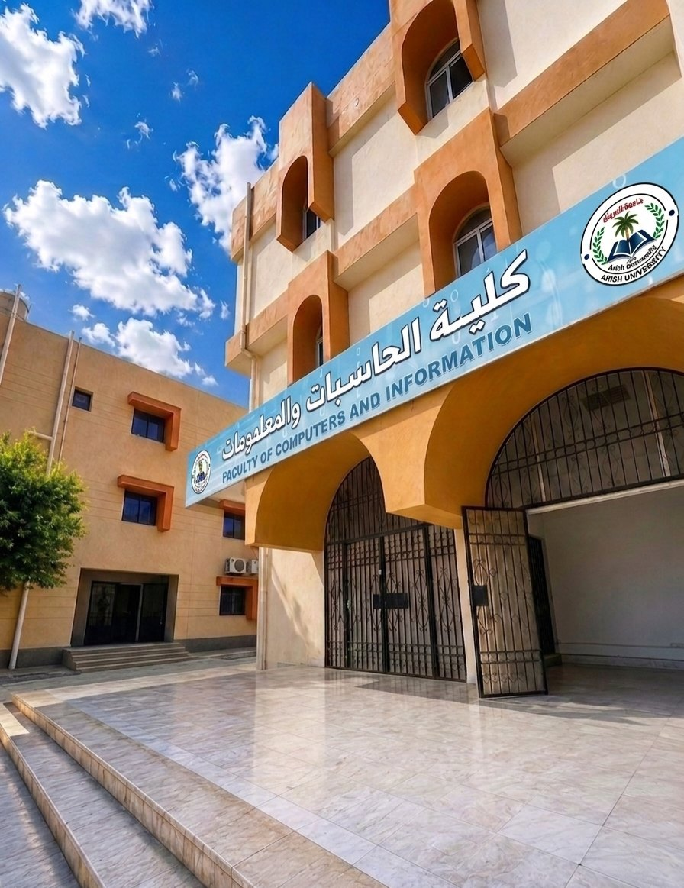

كلية الحاسبات والمعلومات
نحو مستقبل رقمي يبدأ من هنا
من العريش، نُخرّج أجيالًا تتقن علوم الحاسب ونظم المعلومات وتكنولوجيا المعلومات، بأساس علمي متين وتطبيق عملي حقيقي داخل بيئة أكاديمية حديثة.

هوية أكاديمية بُنيت على العلم والتقنية
كلية الحاسبات والمعلومات إحدى كليات جامعة العريش، تجمع بين ثلاثة مسارات أكاديمية متخصصة في علوم وتقنية الحاسبات، وتُعنى بإعداد خريجين قادرين على مواكبة التطور الرقمي المتسارع بأساس علمي متين وتطبيق عملي حقيقي.
خريطة الطريق الأكاديمية
138 ساعة معتمدة ترسم مسارك من التأسيس إلى الاحتراف المهني.
التأسيس البرمجي
دراسة الأسس البرمجية، الخوارزميات، حل المشكلات، والمفاهيم الرياضية الأساسية.
التخصص الدقيق
التعمق في المسار الأكاديمي المختار وبناء الخبرة الدقيقة المتقدمة.
مشروع التخرج
تحويل المعرفة الأكاديمية إلى نظام تطبيقي متكامل يحل مشكلة حقيقية باستخدام أحدث التقنيات.
الانطلاق لسوق العمل
ربط التأهيل الأكاديمي بسوق العمل والفرص المهنية لتصبح جاهزاً كمتخصص في التكنولوجيا.
اكتشف المسارات الأكاديمية
ثلاثة مسارات، مجالات متعددة، ومستقبل واحد يبدأ من اختيارك.